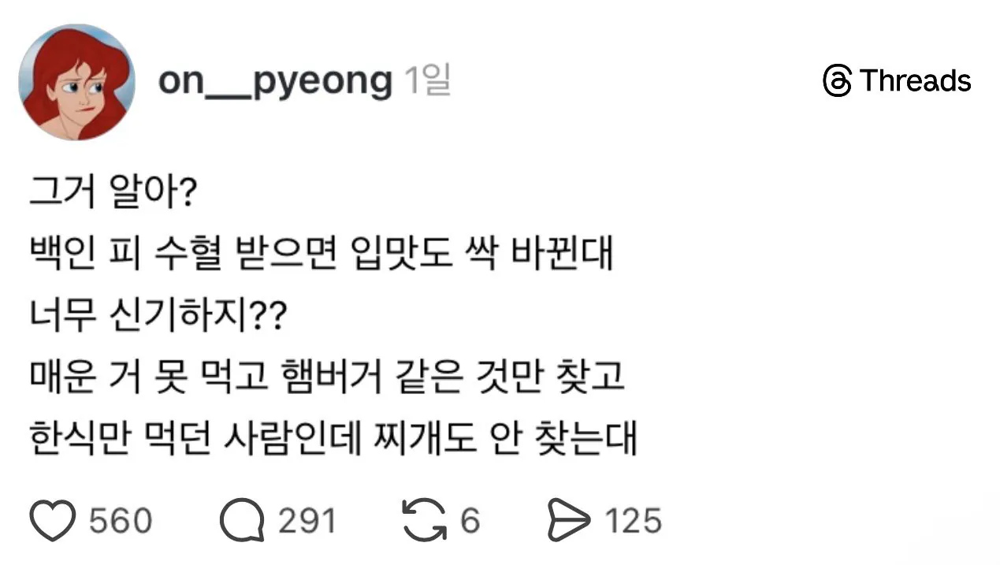
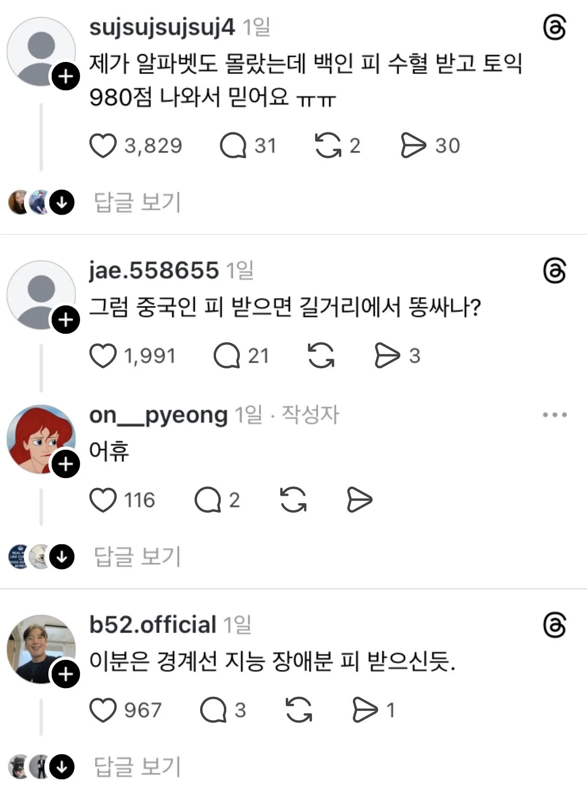

나도 랩틸리언 피 수혈하고 지구가 다르게 보임
혹시 지구가 둥글게 보이십니까?
이새끼 신고함
그건 랩틸리언 피가 아니라네 동무, 사회주의 혁명가들이 흘린 뜨거운 피지!
이제 자본주의의 현실을 간파했으니 부르주아지 돼지들을 깨부수게!
이거보고 고양이 피 수혈받고 고양이귀 미소녀됐다
라우우우 니가니가니가니가
아무리그래도 이종간 수혈은 좀..
같은 혈액형끼리만 수혈받으니까 성격이 점점 고정되는구나
난 A형이라 소심한 성격 고치려고 B형 수혈받았더니 좀 효과 있더라 ㄹㅇ;;
사망에 이를거 생각하면 효과가 탁월한거 맞는듯
그럼 이제 AB형이네
축하해 나도 B형이었는데 지금 AB형 됐어
됐어요 피 수혈 안해줘요
수혈받지마세요 체질이란게 바뀝니다
지가 그래놓고 어휴거리긴
여자피 받으면 ts됨??
오
인종은 중요하지 않고 수혈받은 이후 병증으로 변할 수 있음 ㅇㅇ
피콜로 피 수혈받았더니 탈모왔음 ㄹㅇ
재생능력은 안 생김?
아 머리털도 재생 못하는데 팔다리가 되겠냐고 아 ㅋㅋㅋㅋㅋㅋㅋ
야식으로 닭날개 먹고
회사 날라 왔다
근데 피는 아니고 장기같은거 기증으로 받았는데 입맛이 바뀌었다 뭐 이런 카더라도 보이긴 하던데
그냥 플라시보 효과일까 아니면 주작일까
흠 그럼 입술이랑 고추키우고싶으면 흑인잡아다
근데 똥이식으로 장내 환경 변화를 유도해 알러지 개선하는 치료는 있긴 함
쓰레드 저건 경계선 지능들만 씀? 보이는 거 마다 예술이네
백인 피 수혈은 모르겠고 일찍이 관절 하나가 개박살나서 미국에 사는 건장한 흑형 관절 이식 받았는데
그 뒤로 이상하게도 입맛이 바뀌지 않고 여전히 김치찌개가 가장 좋아하는 음식인 개붕이 입니다.
관절이식? 타가건말하나
심장 이식받으면 사람이 달라진다는 소리는 그래도
오컬트적으로 받아들이기라도 하는데 저건 진짜 지능문제
수력발전소 화력발전소 전기에 따라 이어폰 음질 바뀌는 소리하고 있네.
ㅋㅋㅋ 물속성 이어폰 화속성이어폰
그와중에 중국인 욕하는건 싫었나보네 ㅋㅋ
그냥 공감해줘 싸패들아 ㅠㅠ
조올지피바디?
조혈모세포도 아니고 수혈한번에ㅅㅂㅋㅋ 풀배터리 꼭 받아보시길...